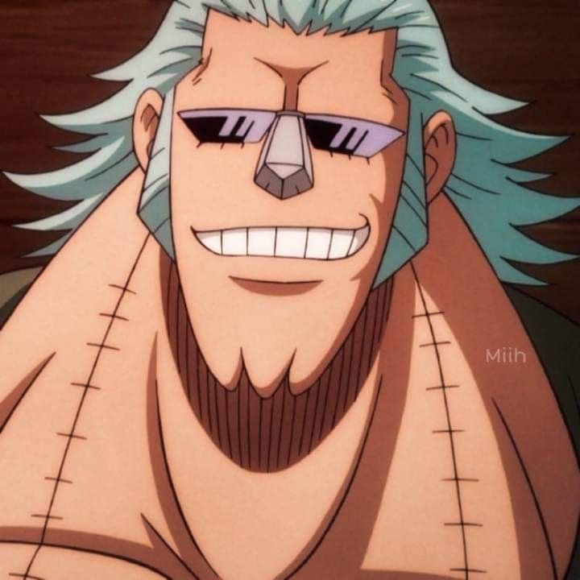

Franky
Cuyo verdadero nombre es Cutty Flam, es el carpintero de la tripulación y el creador de su barco actual. Su sueño es crear el barco de los sueños que pueda circunnavegar todo el mundo.
Historia y Unión
Abandonado por piratas en Water 7 siendo niño, fue acogido por el legendario carpintero Tom (constructor del barco del Rey de los Piratas). Tras un trágico complot del gobierno donde Tom fue ejecutado, Franky sufrió un accidente tratando de detener el tren marino y tuvo que reconstruir su propio cuerpo con chatarra. En un principio, él y su pandilla fueron enemigos de los Sombrero de Paja, pero unieron fuerzas en Enies Lobby para rescatar a Robin. Tras construir el Thousand Sunny, se unió a la banda.
Aspecto

Es un cyborg inmenso. Siempre viste un bañador tipo tanga, independientemente del clima, acompañado de camisas hawaianas. Tras el salto temporal, su cuerpo creció masivamente volviéndose aún más robótico, con hombreras gigantes, brazos de maquinaria pesada y la capacidad de cambiar su peinado presionándose la nariz.
Habilidades
- Cyborg de Combate: Su cuerpo está cargado con armas integradas: ametralladoras, misiles y un poderoso cañón láser (Radical Beam), todo alimentado por botellas de refresco de Cola en su estómago.
- General Franky: Un robot mecha gigante que puede pilotar en combate para enfrentarse a enemigos de gran calibre.
- Carpintería y Tecnología: Es un maestro constructor e ingeniero.
Franky

Rol: Carpintero
Apodo: El Cyborg
Recompensa actual: 394.000.000 Berries
Lugar de origen: South Blue